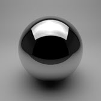

工作室照明
在本教程中，我们将介绍如何重建一个可对各种物体进行照明和渲染的简单摄影照明工作室设置。我们将组合使用 Arnold 区域四边形灯光和 HDR 贴图在场景中创建逼真的镜面反射。HDR 贴图将为任何位于灯光前面的模型的表面提供丰富的镜面反射，并为最终渲染增添照片般的真实感。
要下载场景文件，请单击此处（不包括 HDR 贴图）。
设置模型
场景包括一个弯曲的背景和一个地板平面，两侧各有一个平面，并为它们指定了暗灰色 standard_surface 着色器。
- 分别为顶部、左侧和右侧这三个灯光创建 Arnold 区域光。它们将用于表示摄影工作室中使用的大型柔光箱。
将每个灯光的 light_type 更改为 quad
本教程中使用 HDR 贴图。如果您不想使用文件纹理，也可使用简单的矩形渐变纹理贴图。但是，模型中的反射看起来将不太逼真。
| softbox_midlle_wrm.HDR | softbox_midlle_cold.HDR | softbox_square_gs.HDR |
- 按下图中所示，将每个 HDR 贴图连接到每个区域光的 color 属性。
|  | ||
| softbox_square_gs.hdr 连接到 Arnold 区域光“Top”的 color 属性 | softbox_midlle_cold.hdr 连接到 Arnold 区域光“Right”的“颜色”(Color)属性 | softbox_midlle_wrm.hdr 连接到 Arnold 区域光“Left”的“颜色”(Color)属性 |
曝光
- 测试渲染场景。这时应得到如下图所示的场景。如果反射太亮，记得可以在 Arnold 属性中降低 RenderCam 的曝光设置。
降低 Arnold 的摄影机曝光属性后可以看到 HDR 贴图的高动态范围
灯光的 HDR 贴图细节可见（降低摄影机曝光时）。您可以在场景的镜面反射内看到完整的高动态范围：
| 曝光(Exposure)：0 | 曝光(Exposure)：-2 | 曝光(Exposure)：-4 |
或者，您也可以尝试更改灯光强度或 HDR 贴图的 HSV 属性，以获得想要的效果。
如果您发现工作室中物体正面的照明看起来有点暗，也可以尝试在摄影机前面添加一个反光板（禁用反光板的 primary_visibility ）。

可以修改灯光文件纹理的“颜色增益”(Color Gain)和“曝光”(Exposure) 属性
球形摄影机镜头
学完本教程后，您可以尝试使用 spherical_camera 镜头将该场景转化为 HDR 贴图。
使用球形摄影机镜头渲染的场景
注意：
有关球形摄影机的详细信息，请单击此处。